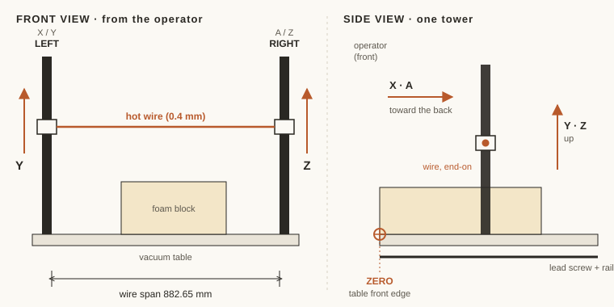
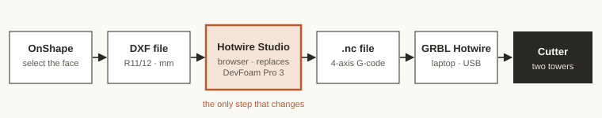
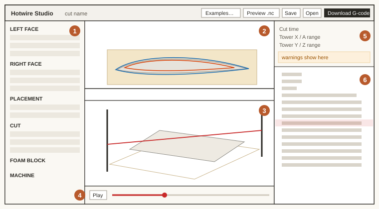
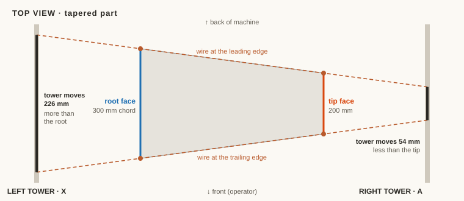
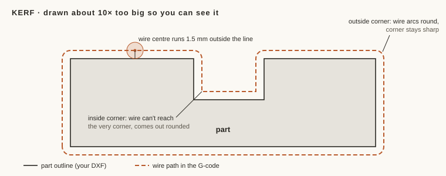
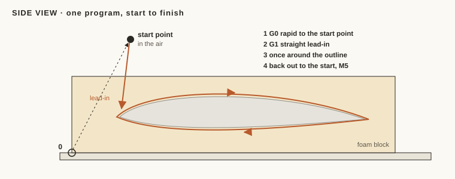
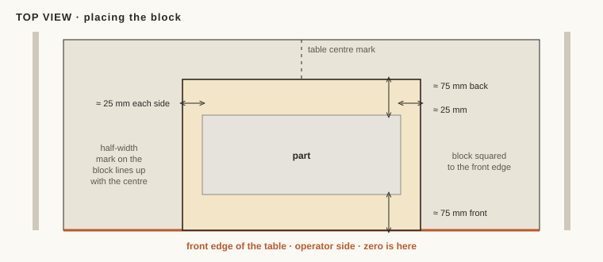

Hot-wire cutting, start to finish
The shop's hot-wire cutter pulls a heated wire through foam between two towers. Each tower moves on its own, so the wire can cut the same shape straight through a block, or a different shape on each face for tapered parts like wings. This guide takes you from a CAD face to a finished part, using Hotwire Studio to make the G-code.
- 1. Safety rules
- 2. The machine
- 3. The workflow
- 4. Export the face from OnShape
- 5. Make the G-code
- 6. Check it before you cut
- 7. Prepare the foam
- 8. Run the cut
- 9. After the cut
- 10. Troubleshooting
- 11. Check yourself
- 12. Quick reference card
- 13. Competency sign-off
1. Safety rules
A hot wire is quiet and slow, which makes it easy to forget that it's live, hot and putting out fumes. These rules aren't optional.
Melting foam gives off fumes. The machine rolls outside for every cut and back inside after.
Someone watches the wire the whole time a program runs. Know where the e-stop is before you press Start.
Turn the power supply off before you load foam, change the wire or reach between the towers. The wire stays hot for a few seconds after.
Run every new program once with no foam and the wire cold, and watch that it stays inside the machine and clears the table.
Turn the heat down when the wire leaves a cutout or re-traces a line. Turn it off as soon as the cut ends.
Nothing on the rails or drag chains, and no hands near the carriages while the program runs.
2. The machine
Two towers stand on either side of the vacuum table. Each tower has a horizontal axis (front to back) and a vertical axis (up and down), and the wire is clipped between the tower tops.

| Part | What it does |
|---|---|
| Towers | Lead-screw horizontal axis on a plywood base, aluminum-extrusion vertical axis. Microswitches home each axis. |
| Controller | Arduino Mega + RAMPS board with plug-in stepper drivers (5 slots, so a 5th axis is possible). Connects to the laptop by USB. |
| GRBL Hotwire (laptop) | Connects on a COM port, homes, jogs, zeroes and sends the G-code. Its preview is unreliable, so preview in Hotwire Studio instead. |
| Bench power supply | Heats the wire. Current is set by hand with the knobs and isn't controlled by the G-code. |
| Vacuum table | Holds the block down. The vacuum runs on its own stool and switch. |
| Wire | 0.4 mm, held by alligator clips at the tower tops. Tension it before every session. |
3. The workflow

Hotwire Studio runs in any browser, with nothing to install: shopnerd.github.io/hotwire-studio. It remembers your last setup in that browser. Use Save to keep a setup file with your project.
4. Export the face from OnShape
- Hide every other part so only the one you're cutting shows.
- Select the face you want the wire to follow, press N to look straight at it, then export it as a drawing: DXF, R11/12, millimeters.
- Orient it so the leading edge is on the left. Hotwire Studio puts the drawing's left side at the front of the machine.
- One face per file. For a tapered part, export both end faces, one file each. If the file has extra outlines, the app uses the largest one and tells you.
For airfoils you don't need CAD at all. Type a NACA 4-digit code, or load a coordinate file (.dat, Selig or Lednicer format) from an airfoil database.
5. Make the G-code

A straight cut (same shape on both faces)
- Left face → Shape → From file, then Load… your DXF. Chord / length fills in with the drawing's real size. Leave it alone unless you want to scale the part.
- Right face → Shape → Same as left.
- Placement: set Part width (the distance between the two faces). Leave Centered between towers on and center the block on the table to match. Then set Part front X and Part bottom Y (see where the part sits).
- Cut: check Kerf and Speed. The shop's last DevFoam job used 1.5 mm per side and 200 mm/min.
- Read the warnings on the right, press Play to watch the cut, then Download G-code. The file is named after the cut name at top left.
A tapered cut (wings, winglets, anything that changes)
Give each face its own shape and size, then tell the app where the right face sits relative to the left. The app does the rest: it lines up matching points on the two faces, offsets each one for kerf, and works out how far each tower has to move.
- Load the root profile on the Left face and the tip on the Right face (From file, or Same as left if only the size changes). Set each Chord / length.
- Use Rotation for washout or twist. Positive is nose up, and it pivots at 25% of the chord.
- Type the offset between the faces in Offset dX (sweep, toward the trailing edge) and Offset dY (up). Measured at says which point the offset is measured between: the outline's lower-left corner, the leading edge or the trailing edge. This is the number you used to measure in CAD and retype into DevFoam. Now you type it once.
- Turn the 3D view and check the part looks like the part. The grey lines show which point on the left face cuts with which on the right.
Sync points: telling the app which spots cut together
On a taper the app has to decide which point on the left face cuts at the same moment as which point on the right. By itself it matches the start, the leading edge, and corners when both faces have the same ones. That's right for the same shape at two sizes. When the two faces are different shapes (a different airfoil at the tip, a flap cut-out on one face only), add sync points so features line up instead of drifting. A twisted or wavy surface usually means the sync is wrong.
- In the app: under Sync points, press Add pair. Click the spot on the blue (left) outline in the side view, then the matching spot on the orange (right) outline. The pair shows as a numbered orange line. Remove a pair with ×.
- In CAD: draw a point, or a tiny circle (2 mm radius or less), right on the outline in each face's sketch. Both DXFs need the same number of them, in the same order around the shape. The app pairs them in order and lists them as "from the DXFs".
- Pairs must go round both faces in the same order. A pair that crosses another is ignored and the app says so.

What each Cut setting does

Where the part sits
Part front X and Part bottom Y place the part's nearest-front, lowest point measured from where you zero the wire. If you zero at the front edge of the table at table height (Figure 1), and the block is squared to that edge, then:
- Part front X = the foam you leave in front of the part, about 75 mm (3 in).
- Part bottom Y = the foam you leave under the part, enough that the wire never reaches the table.
The shop's last DevFoam job placed the part at 2 mm / 2 mm. That only works if the wire was zeroed at the block's front-bottom corner rather than the table edge. Agree with shop staff on one zeroing habit and use it every time.

6. Check it before you cut
- Warnings box (right). Fix anything orange before you download. A tower going below zero, past its travel limit, or a start point inside the part are all real problems.
- Tower ranges. Tower X / A range and Y / Z range show the farthest each tower must go. Once the travel limits are entered under Machine, the app warns you automatically. (Confirm: the shop still needs to measure them.)
- Side view. Solid blue and orange are the cut on each face. Dashed lines are the tower paths. The tan box is the foam block. Nothing should touch the table line.
- Play. Watch the wire go around once at 50×. Clicking a line in the G-code jumps the preview to that move.
- Preview .nc loads any finished file, including old DevFoam files. Use it instead of GRBL Hotwire's preview.
7. Prepare the foam

- Height: as bought (over 2 in). Extra height is fine.
- Width (the direction between the faces): part width + about 25 mm (1 in) each side.
- Length (front to back): longest chord + about 75 mm (3 in) front and back.
- Mark the half-width on the block's front face and line it up with the table's center mark.
- Square the block to the front edge of the vacuum table. To square a rough block, cut it first with a straight vertical pass.
8. Run the cut
Set up
- Roll the machine outside. Clear the rails, check the table is squared and planked, and tension the wire.
- With the power supply off (wire cold), release the e-stop and turn the machine on.
- Put the vacuum on its own stool with the hose connected and the vacuum off.
- Open GRBL Hotwire, plug in USB, pick the COM port and connect.
- Jog forward and down, run the homing cycle, then jog the wire to the front edge of the table, square it to the table, and zero all axes there.
Set the heat
- Make test cuts in scrap at your program's speed.
- Adjust current until the wire doesn't drag behind (no bow in the wire) and the kerf is about 1.5 mm each side.
- If the slot is wider or narrower than your kerf setting, change Kerf in the app and download again.
Cut
- Dry run: wire cold, no foam. Run the whole program and watch it.
- Load the block, square and center it (Figure 7).
- Load the .nc file in GRBL Hotwire. Send the setup lines with Send line, move to the start point, then jog to the highest and farthest-back point of the cut to confirm the block fits.
- Vacuum on. Power supply on. Start. Stay with it the whole time.
- Lower the heat when the wire exits a cutout or re-traces a line. Turn the wire off as soon as the program ends.
9. After the cut
- Check the part against a full-size paper print of the DXF. If it's small all round, reduce kerf (or heat). If it's big all round, increase kerf.
- Write the kerf, speed and heat that worked on your setup file (Save), so the next cut starts from known numbers.
- Shut down: power supply off, vacuum off, return to zero, disconnect, press the e-stop, unplug, roll inside.
10. Troubleshooting
| What you see | Likely cause | Fix |
|---|---|---|
| Wire bows behind its carriages | Too cold for the speed | More current, or lower Speed |
| Wide, melted slot; rounded edges | Too hot for the speed | Less current, or more Speed; re-measure kerf |
| Part small (or big) all round | Kerf setting doesn't match the real melt | Change Kerf by half the error per side |
| Tapered surface twisted or wavy between two different shapes | The faces are matched at the wrong points | Add sync points at the features that should line up |
| Taper twisted or swept the wrong way | dX / dY sign or Measured at point | Check in 3D; flip the sign; confirm the reference point matches your CAD measurement |
| Part mirrored front to back | DXF leading edge was on the right | Re-export, or tick Drawing's left side to the back |
| "A tower goes to X −… mm, in front of zero" | Part too close to zero, or a taper pushing a tower past it | Raise Part front X, or move the start point |
| Wire hits the table | Part bottom too low, or zero set above the table | Raise Part bottom Y; re-zero |
| Start move cuts through foam | Start point inside the block | Set Start point X / Y in the air, above or in front |
| GRBL Hotwire preview looks wrong | Its preview doesn't handle these files well | Use Preview .nc in Hotwire Studio |
11. Check yourself
On a tapered wing, why can't the towers just follow the root and tip outlines?
The towers sit outside the faces. The wire is a straight line through matching points on the two faces, so each tower has to be where that line, extended, meets it. The root-side tower ends up tracing a bigger shape than the root and the tip-side tower a smaller one than the tip. The app works this out for every point.
Your part is 3 mm too short and 3 mm too thin. What do you change?
The wire is melting 1.5 mm more per side than the kerf setting allows for. Either raise Kerf by 1.5 mm per side, or cool the wire and re-run a test cut. Change one thing at a time.
A line in the file ends in F200.2654. Is that the speed?
No. The file is in G93 inverse-time mode, so F is 1 ÷ (minutes for that move). A 1 mm move at 200 mm/min takes 0.005 min, which gives F200. Don't edit F values by hand; change Speed in the app.
Where is zero, and what has to be true when you set it?
The wire at the front edge of the vacuum table, at table height, squared to the table, set after homing. Part front X and Part bottom Y are measured from there.
What has to happen before you turn the power supply on for a real cut?
Outdoors, rails clear, wire tensioned, homed and zeroed, heat set on test cuts, a dry run with the wire cold, block squared and centered, fit confirmed at the highest and farthest-back point, vacuum on, and someone staying with the machine.
12. Quick reference card
Hot-wire cutter: every cut
- OnShape face → DXF R12, mm, leading edge left
- Hotwire Studio: load faces, set width, placement, kerf, speed
- No warnings · Play once · Download G-code
- Outside · rails clear · wire tensioned
- Wire cold · e-stop released · machine on
- GRBL Hotwire: connect · home · zero at table front edge
- Test cuts → heat for ~1.5 mm kerf/side
- Dry run, wire cold, no foam
- Block squared + centered · fit check high / back
- Vacuum on · heat on · Start · stay with it
- Lower heat on exits · wire off at end
- Check against paper print · note kerf
- PSU off · vacuum off · return to zero
- Disconnect · e-stop · unplug · roll inside
13. Competency sign-off
Do each of these in front of shop staff. The ticks below are saved in this browser as a study copy only. The real record is the shop's sign-off.